交流电路功率 | Power in AC Circuit
推导过程：
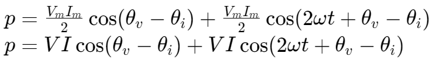Where 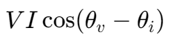 is constant part, 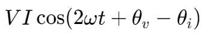 is time varying part.
With formula 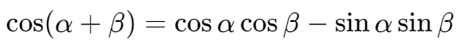,
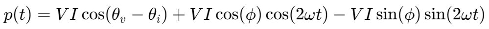Let 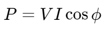 and 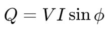,
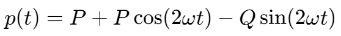
其中，
- 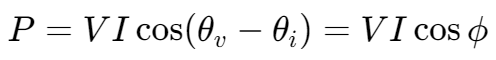: the real power, unit: 1W
- 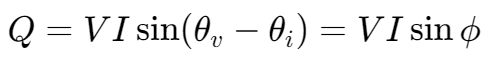: the reactive power, unit: 1VAR(VAR: Volt Ampere Reactive)
- 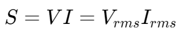: the apparent power, unit: 1VA(VA: Volt Ampere)
这里的 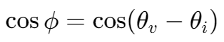 即为功率系数,,，定义了视在功率,, S 转化为实际功率,, P 的比例：
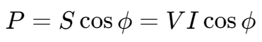
复数功率 | The Complex Power
由于电压、电流的相量和阻抗都是复数的值，所以把复数的功率定义为：
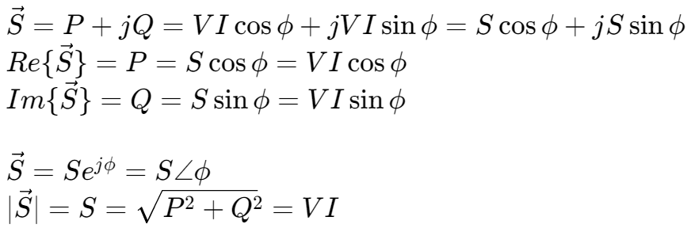
S 的复数表达是由两个复数乘积而来，其中一个是电压，另一个是电流的共轭。
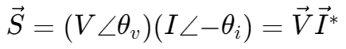